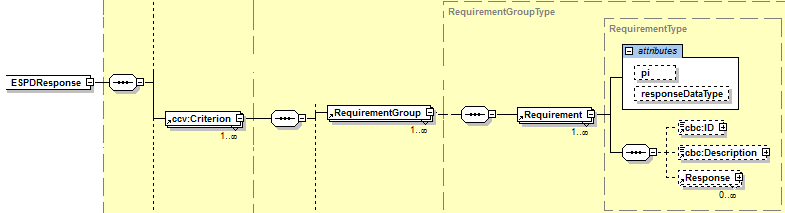

Requirement

Figure 1. XSD Diagram of the class Requirement
"A class to associate a specific requirement that must be fulfilled through a response by the Economic Operator (EO)" |
||||
Attributes |
||||
pi |
Processing Instruction. Reserved for non-standard processing of the class |
OPTIONAL (0..1) |
|
|
responseDataType |
Type of response expected for this requirement; e.g. Indicator, Date, Description, etc. |
MANDATORY (1..1) |
|
|
Properties |
||||
cbc:ID |
A language-independent token, e.g., a number, that allows to identify a Requirement |
|
MANDATORY (1..1) |
|